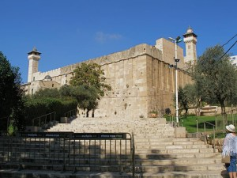

Home Quiz
Shadowland: Beginnings: Week 59
Genesis 49
- 49:27 "Benjamin shall be a ravining wolf" - examples of fierceness and
treachery in the tribe of Benjamin, include Ehud in Judges 3:12-28
(but who then judged Israel), Saul in 1 Samuel 22:6-23, Rekab and
Baanah in 2 Samuel 4, Saul of Tarsus who persecuted the Church
(but then became an Apostle to the Gentiles).
A Picture of Christ
Taken together, the prophecies of Jacob concerning his sons also paint
a vivid picture of our Saviour.
- Reuben: "my firstborn, my might, and the beginning of my strength, the
excellency of dignity, and the excellency of power" - Christ
the Firstborn
- Simeon: "instruments of torture" - Christ the Crucified
- Levi: Christ our High Priest
- Judah: Christ our King
- Zebulun: Christ our Refuge and Haven of Rest
- Issachar: "became a servant" - Christ the Humble Servant
- Dan: Christ the Judge
- Gad: "a troop shall overcome Him, but He shall overcome at last" - Christ
the Resurrection
- Asher: Christ the Bread of Life
- Naphtali: "he giveth goodly words" - Christ the Prophet
- Joseph: "blessings" - Christ the Millenial King
- Benjamin: "ravining wolf" - Christ the Terrible Warrior
The Death of Jacob

- 49:30 Herod built a fortress wall around the cave which still stands
today in Hebron. A church was built over the cave in 570, which became
a mosque in the 7th century, a church again in the 13th century, and
then a mosque again under Saladin.
- 49:31 "there I buried Leah" - Leah has the place of honor
- 49:33 "and was gathered unto his people" - this does not mean buried
with family, for Abraham for whom the phrase is used, had only Sarah in
the tomb. It does not mean buried with ancestors, for Abraham, Aaron,
and Moses were not buried with ancestors. It means he joined
those who had gone before to Sheol: Luke 16:19-31